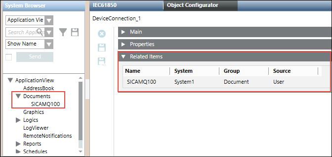
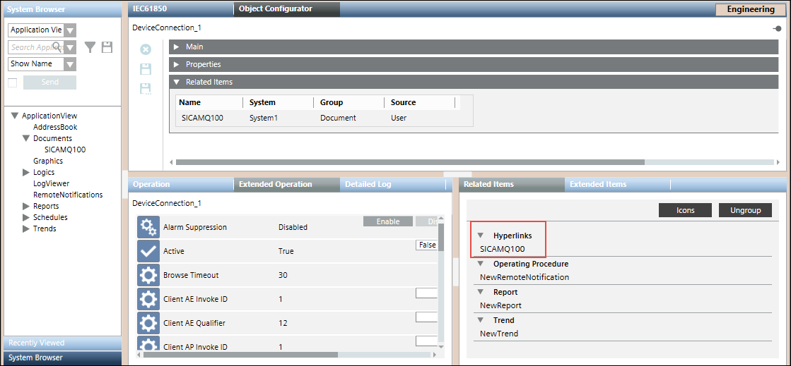
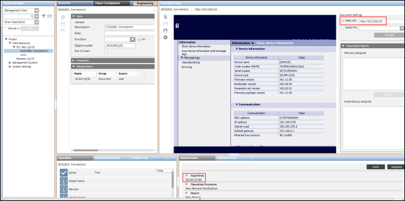

Browsing Device Information from a Web Browser
- A device connection object is created below the IEC61850 network.
- In the System Browser, navigate to Application View > Documents.
- In the Document Settings section, select the Web URL option and enter the IP address of the connected device whose details you want to view.
- Click Preview. The details of the device display.
- Save the device details by clicking Save Document As
 .
. - The device details are saved as a document node below the Documents folder.
- Navigate to the Management View and select the device connection object from below the IEC61850 network.
- In order to view the details of the device, navigate back to the Application View, select the Documents folder, and thereafter select the saved document.
- Drag the document to the Related Items expander in the Object Configurator tab and click Save
 .
. 
- The document displays in the Related Items tab.

- Select the document from the Related Items tab.
- The details of the document display in the Secondary pane.

NOTE:
You can view the device information in a web browser only if the connected device supports web services.
The following screenshot provides an example of data displayed in the web browser of a SICAMQ100 device from within the Secondary pane.
